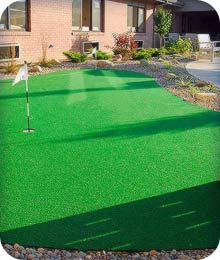
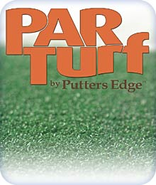

West Palm Beach Backyard putting green turf, artificial golf turf, synthetic turf for sports and artificial putting turf - supplied by Home Putting Solutions - Palm Beach for West Palm Beach, Boca Raton, Jupiter, Palm Beach Gardens, Wellington in Florida.
Synthetic turf and artificial turf dealer for putting greens, chipping mats, golf fringe, driving mats and artificial synthetic grass turf in South Florida, Palm Beach County, Broward County, FL, FLA are supplied by Home Putting Solutions - Palm Beach.
West Palm Beach Backyard putting green turf, artificial golf turf, synthetic turf for sports and artificial putting turf - supplied by Home Putting Solutions - Palm Beach for West Palm Beach, Boca Raton, Jupiter, Palm Beach Gardens, Wellington in Florida.
Synthetic turf and artificial turf dealer for putting greens, chipping mats, golf fringe, driving mats and artificial synthetic grass turf in South Florida, Palm Beach County, Broward County, FL, FLA are supplied by Home Putting Solutions - Palm Beach.
This is not standard backyard putting green turf - These synthetic golf greens, made with Putters Edge PAR Turf synthetic turf are Palm Beach County's best putting greens, period!
Putters Edge putting green turf is golf, golf tips, artificial turf, synthetic turf throughout cities like Palm Beach, Coral Springs, Pompano Beach, Deerfield Beach, Boca Raton, Jupiter, Palm Beach Gardens, Wellington, Manalapan, Boynton, Delray, West Palm Beach, Lake Worth, Palm Springs. Tough synthetic turf made for backyard putting greens, artificial turf installation of synthetic grass or even artificial turf for horse stalls. West Palm Beach putting green turf as well as Florida putting green turf with artificial turf tips about putting green construction, design and installation. In West Palm Beach, Home Putting Solutions - Palm Beach is your exclusive authorized Putters Edge PAR Turf dealer!
The Truth about Synthetic Turf
And why Home Putting Solutions - Palm Beach is proud to offer
Putters Edge PAR Turf™
A "great price" on artificial turf is only great if the turf itself is great!
Turf Quality is Directly Linked to ANY Green's Price!
One very critical EDGE you get with
Putters Edge Custom Putting Greens
is the perfect blend of both worlds:
Great Quality and a Great Price.

Our turf philosophy is simple:
A Green for Every Golfer.
That means no matter who you are, and regardless of your budget or space limitations, we intend to match you up with a synthetic turf golf practice system designed to improve your score, your confidence and most of all, your personal satisfaction and enjoyment of the great game of Golf.
Most putting green dealers are bound by contract to represent a single distinct artificial turf manufacturer, regardless of the golfer's individual needs. That's just insane.
Putters Edge Custom Greens are truly custom made, individually, once you come to your final decision. Home Putting Solutions - Palm Beach walks you through every step of the process, assuring that you get exactly what you need:
The best "perfectly personalized" practice tool
in your budget range.
When we design a green for you, it's done from information we've discussed together. We then use the perfect synthetic turf or combination of turfs for your distinct situation - chosen from the many different artificial turf options we carry. Through constant research, we keep our edge by offering a complete line of solutions regardless of manufacturer. Most of our customers choose our state-of-the-art Pure Absolute Roll™ nylon turf. This proprietary PAR turf does not require sand fills, making it virtually maintenance-free.

PAR™ synthetic turf is the flagship of our entire business.
We created it because no one else met our top-end requirements.
Pure Absolute Roll is the key. Year after year, PAR keeps it's incredibly natural feel and stands strong against wear and tear. The fibers are extra tough, and spring back into position consistently.
But the real beauty of PAR turf is the way it putts - as close to a real "country club " green as we've ever found. With our stimp speeds that duplicate those of championship greens, we're certain you'll agree. Putters Edge own PAR-1™ turf checks in at a stimp measurement of 10.5, and our PAR-2™ is a slower-rolling 9.5 on the stimp scale.
A "good price" for an inferior green is no bargain. Often, such a green will literally end up in the dog's house, after it quickly wears out and begs for replacement! We call that a crime. Buyer beware!
You deserve the most realistic green you can afford, and we'll give our all to achieve that balance. Our best systems usually feature top-quality PAR™ synthetic turf, but not always. For many reasons, we'll choose something else to create the ultimate green system for your exact environment. It truly is both a science and an art, but you'll know that from your very first putt.
Are there quality greens for the smallest spaces and budgets?
If a 2,000 square foot luxury outdoor dream green isn't possible, don't fret! We recognized that need after seeing the lack of real quality and value available at low price points. We now have pre-cut models to match any need. Tell us your budget, and we'll set you up with something that's right for you.
We mean what we say:
A Green for Every Golfer.
Call Home Putting Solutions - Palm Beach
for your FREE consultation today!
(561) 225-4344